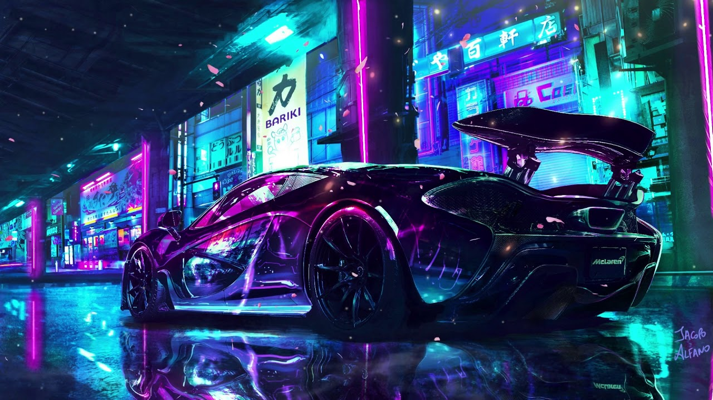

McLaren P1 — английский суперкар с гибридным двигателем, преемник McLaren F1, который производила компания McLaren Automotive. Первую информацию о следующем поколении F1 (тогда ещё не было известно о новом имени) компания объявила в октябре 2011 года, когда начались его тесты[1]. В феврале следующего года стало известно, что автомобиль будет гибридным, также стали известны данные о его двигателе[2]. Затем, в апреле, стало известно о ещё нескольких сведениях[3]. В июле опубликовалась дополнительная информация о двигателе[4], а в сентябре — появились первые тизеры гиперкара[5]. В сентябре, на Парижском автосалоне был представлен концепт автомобиля, носивший имя P1[6]. В январе 2013 года готовый автомобиль представили на закрытой презентации в Беверли-Хиллз[7]. На Женевском автосалоне в марте 2013 состоялась мировая премьера окончательной версии автомобиля[8]. Продажи начались в октябре 2013 года по цене около миллиона евро. Всего с 2013 по 2015 г. было произведено 375 автомобилей. 
Двигатель M838T
В качестве бензинового ДВС использовали эволюцию предшествующего двигателя, устанавливаемого на Mclaren Mp4 - 12C мощностью 600 лс на 8500 об/мин. Более 90% всех деталей было изменено либо изготовлено заново. Взять хотя бы картер, с приводами подвода мощности и крепления электродвигателя. Мощность в 737 лошадиных сил на 7200 об/мин достигнута с применением двух турбин, максимальное давление буста которых доходит до 1.5 бар.